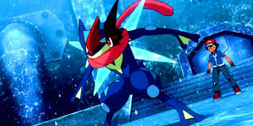
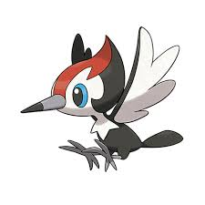
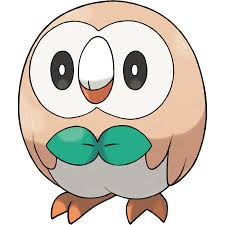
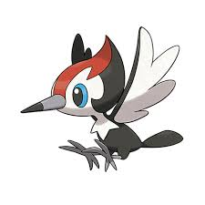
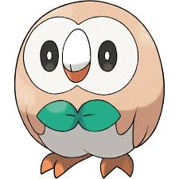

Pokémon is a
Japanese media franchise consisting of video games,
animated series and films,
a trading card game, and other related media.
The franchise
takes place in a shared universe in which humans co-exist with
creatures known as Pokémon, a
large variety of species endowed with special powers.
The franchise's
target audience is children aged 5 to 12,but it is known to attract people
of all ages.
The franchise originated as a
pair of role-playing games developed by Game Freak, from an original
concept
by its founder, Satoshi Tajiri.
Shortly after evolving into Greninja, through its strong bond with Ash, it can call upon a transformation similar to Mega Evolution, where it takes on an appearance resembling its Trainer while being covered in a water veil. In its final form, the water veil moves from around its body to its back and forms an "X" shape, which resemble wings, then the wings form into a small sphere shape of water on the middle of its back with a light blue ring in the middle of it and then grows in size until it forms into a giant shuriken made of water. Its full capabilities were unknown, but it appears to give a significant boost in speed and power. In its completed form, it can rival the power of Mega Evolved Pokémon.

GRENINJA
LUCARIO
PIKACHU
 



see the Document